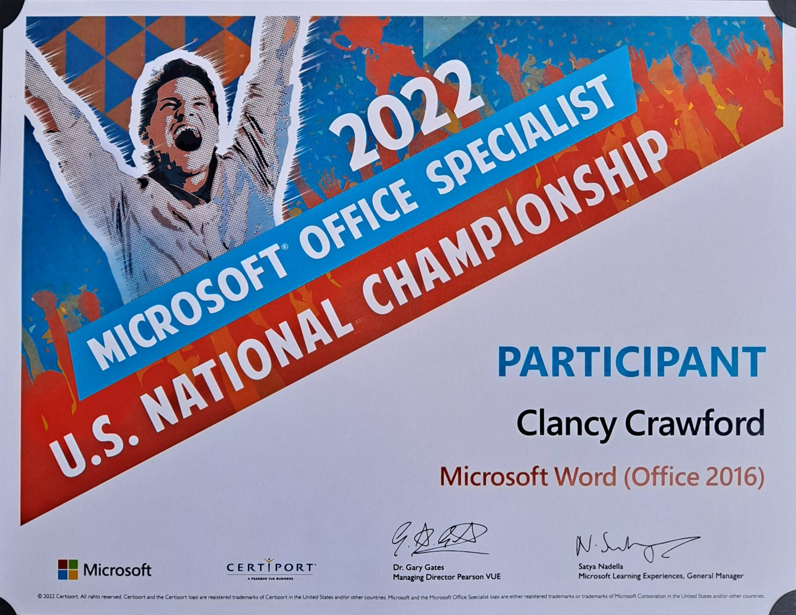

Startup Funding · 2026
Florida Venture Forum Collegiate Award Winner
Mayott Aerospace was recognized at the Statewide Collegiate Startup Competition and received a $2,500 award from Space Florida.
Selected awards, honors, certifications, and milestone evidence. Public files are linked where available; private IDs and contact details are redacted before posting.
Mayott Aerospace was recognized at the Statewide Collegiate Startup Competition and received a $2,500 award from Space Florida.

Mayott Aerospace earned $10,000 in Launch Your Venture funding at Embry-Riddle Aeronautical University.

Participant in the Microsoft Office Specialist U.S. National Championship for Microsoft Word (Office 2016).

Spanish proficiency documented through AAPPL score reports, with student ID redacted for the public portfolio.

Inducted into Phi Theta Kappa and later served in chapter leadership at John Wood Community College.

Academic-athletic recognition while competing as a collegiate volleyball athlete at John Wood Community College.
Completed the National Student Leadership Conference Aerospace Engineering program.